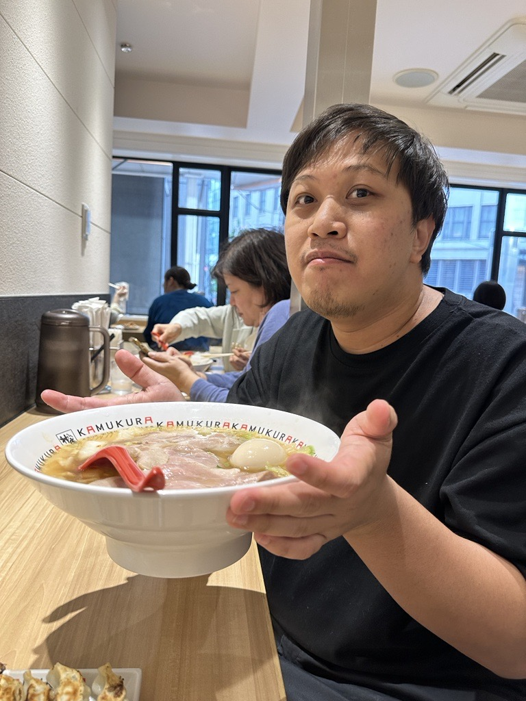

ประวัติส่วนตัว
* ชื่อ - นามสกุล
ไตรรัตน์ อุดร
* ชื่อเล่น
ปัก
* วัน/เดือน/ปีเกิด
29 มีนาคม 2532
* เบอร์โทรศัพท์
089-786-3945
* ที่อยู่
42/52 ม.7 ถ.ติวานนท์ ต.บางตลาด อ.ปากเกร็ด จ.นนทุบรี 11120
* สิ่งที่ชอบ (อาหาร สี วิชาเรียน เพื่อน)
อาหารที่ชอบ - อาหารไทย
สีที่ชอบ - สีโทนมืด (ดำ เทา)
วิชาเรียน - เกี่ยวกับ Computer แทบจะทุกอย่าง
เพื่อน - ทุกคน
* เพื่อนสนิทในห้อง 1 คน
กฤษณะ พุทธโกสัย (แบงค์)
* รูปภาพ (เห็นหน้าชัด)

* อื่นๆ
ชอบกินครับ (แบบในรูปเลย) แล้วก็ชอบออกกำลังกายด้วยครับ เล่นกีฬาได้หลายชนิด แต่ไม่เก่งสักอย่าง เขียน Code ก็เช่นกันครับ
ชอบเล่น Ice Skate มากครับ (เคยได้เป็น Coach ด้วย) และก็ชอบเล่น Ice Hockey ด้วย แต่ไม่ผอมสักที
แล้วก็ ผมเป็น QA ครับ